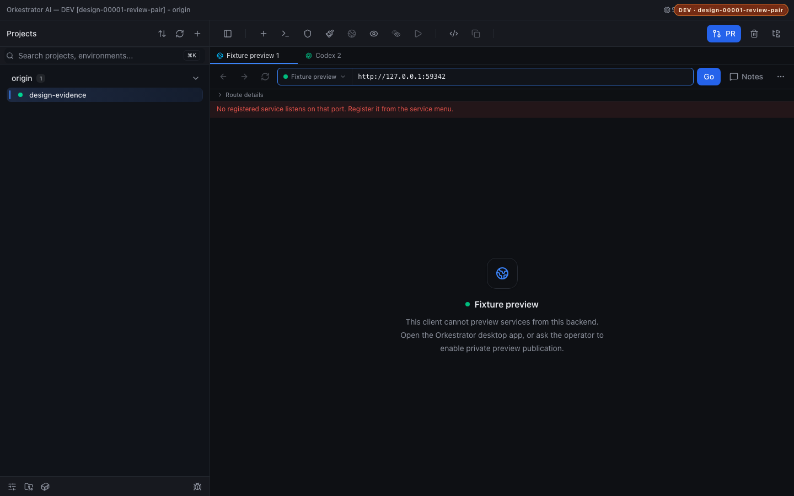
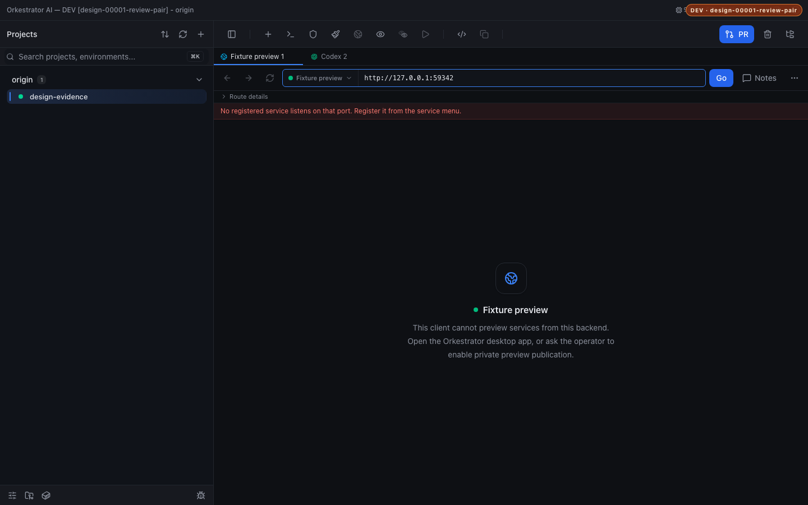
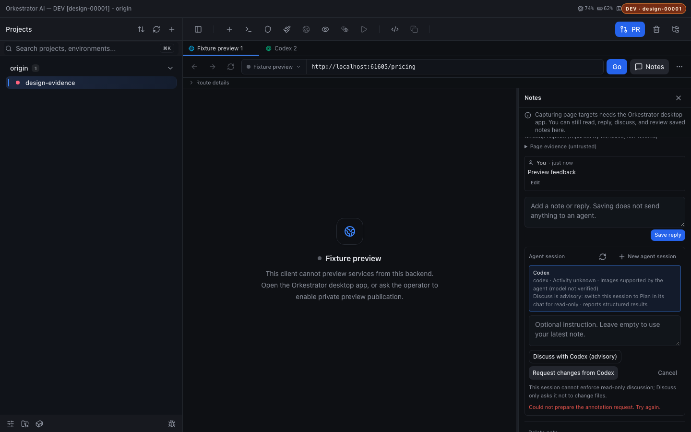
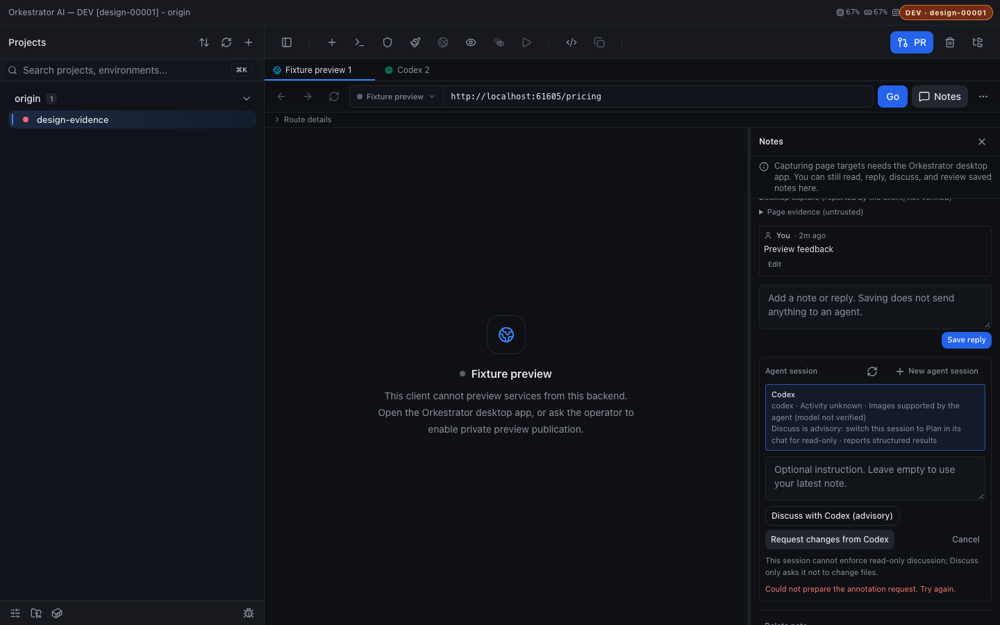
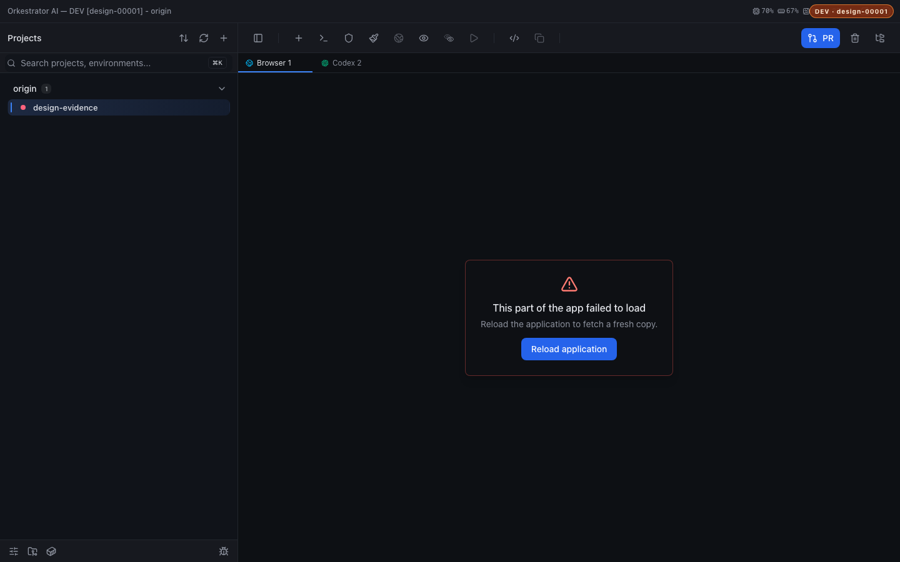
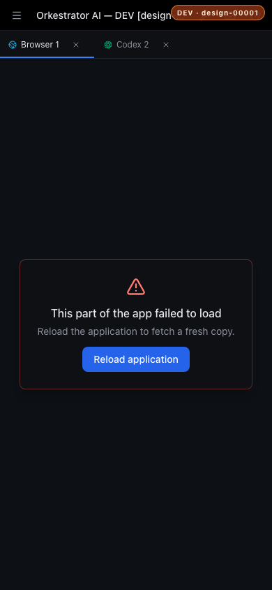

Design tasks / 00001
00001 · Use the failure token for error text, not destructive
Problem
The baseline audit found text-destructive on 299 lines, including error
banners, failed checks, alert lines, and destructive action labels. The same kind of message
could render in two different reds. destructive is deliberately the fill for
destructive buttons; failure is the text-weight red.
failure as a button fill or destructive as text
colour; they are tuned for different jobs.
Find every instance
grep -rnE --include=*.tsx "\btext-destructive\b" apps/web/src | grep -v "\.test\."Scope
| Where | What |
|---|---|
apps/web/src/components/LazyLoadBoundary.tsx:146,185 |
icon color on the load-failure cards |
apps/web/src/components/browser/ServiceBrowserTab.tsx:977,1198 |
Browser tab error banner and address-resolution alert line |
apps/web/src/components/browser/PreviewDiagnostics.tsx:89 |
diagnostic tone |
apps/web/src/components/browser/PreviewServiceDialog.tsx:269 |
dialog alert line |
apps/web/src/components/browser/annotations/* |
AnnotationEditor:321, AnnotationEntries:157, AnnotationPanel:265, AnnotationReply:132,347, AnnotationThread:567,742, DestinationPicker:245, RequestCard:357,403,619, RequestComposer:343,404, RequestFollowUp:160, ResultReview:160, SavedImageControls:242 |
apps/web/src/components/bug-report/BugReportSheet.tsx:579 |
empty-state error text |
apps/web/src/components/build-pipeline/BuildChatTab.tsx:260 |
alert icon |
apps/web/src/components/ui/dropdown-menu.tsx:66,
context-menu.tsx:112
|
destructive menu item variant |
…and the rest of the grep above |
work through it directory by directory |
Approach
- Run the grep and list every hit in the Notes section of this page with a one-word class: text (an outcome or error message), action (a destructive action label) or other.
-
Replace
text-destructivewithtext-failurefor every text and action hit. Keepborder-destructive/*andbg-destructive/*tints and fills as they are: they are the destructive family. -
Check each swap on the dark ground.
failure(#ff7b72) is lighter thandestructive(#e5534b), so contrast improves; confirm small 11px text still reads. -
Where an element has both a tint (
bg-destructive/10) and text, keep the tint and change only the text.
Decisions
One option is marked recommended. Record the option you chose in Notes.
What to do with destructive action labels (menu items, ghost buttons)
hover:text-failure on a
destructive wash for toolbar destructive actions. One red for all red text.
Required evidence: before and after
Every slot needs a before image (captured first, before editing any code) and an
after image. Use the same profile, fixture data, theme, viewport and zoom for both.
Save PNGs under design/images/00001/ using the exact file names shown. See
How to capture.
Browser tab with a failed preview load desktop 1440×900
Open the Browser tab in a fixture environment. Wait for the registered service to show ready, then load an unregistered port so the red banner appears. Keep the pointer outside the sidebar and the environment tooltip closed for both captures.


Annotation panel with a failed request desktop 1440×900
Create an annotation request and force a failure (stop the backend call or use an invalid destination).


Load-failure card desktop 1440×900
Force a lazy import failure (block the chunk request in Playwright) to show the card.

Load-failure card narrow 390×844
Force a lazy import failure (block the chunk request in Playwright) to show the card.

Out of scope
- Changing any fill:
bg-destructiveon confirm buttons stays. - Hard-coded
text-red-*classes (that is task 00002).
Verification
mise run test:logged -- --name web-typecheck -- bun run --cwd apps/web typecheck
NODE_ENV=test mise run test:logged -- --name annotations -- bun --cwd=apps/web test src/components/browser --parallel=2 --only-failures
mise run format:check
mise run lint
React tests in this repo need NODE_ENV=test in build shells. Real-browser
check: use a throwaway dev:test profile named design-00001, never
a production instance.
Acceptance checklist
-
Before images captured on unmodified code for every slot above, and committed
under
design/images/00001/. - After images captured after the change, with the same profile, data, theme, viewport and file names, and committed beside the before images.
- Every image slot on this page shows a picture (the evidence badge reads “10 / 10”).
- I have looked at each pair and written what changed, and anything that did not change that should have, in Notes.
- Hits were classified in Notes, and each decision above is recorded with the option chosen.
-
Type-check and the owning tests pass (commands above);
mise run format:checkandmise run lintpass. - The browser check includes a page reload and, for layout-affecting changes, the narrow viewport.
- DESIGN.md or PRODUCT.md updated if needed: None expected. If an action-label exception is kept, add it to the Colors section of DESIGN.md.
- Status set to Done on this page and in the index.
Notes
Decision
Use failure for error text, error icons, and destructive action labels. The
shared context and dropdown menus use it for the label and icon, including keyboard focus.
Existing borders, fills, focus and hover washes, and text opacity modifiers keep their
current values. Keeping a separate action-label color would avoid a visible menu change, but
would leave two reds for text and require an exception to the design rule.
Capture comparisons
Before captures used the unmodified b2c91abb9 checkout. The Browser error pair
used the same local fixture in the design-00001-review-pair profile with the
sidebar tooltip closed. The other pairs used the design-00001 profile. Both
profiles were credential-free and headless, with dark mode at 100% zoom and device scale 1.
Desktop is 1440×900 and narrow is 390×844. The browser reloaded the saved tab between
scenarios.
- Browser preview error. Submitting an unreachable port in the fixture’s registered service tab produces the same alert in a lighter red. The red wash and border retain their original values. Contrast against the captured banner background rises from 4.72:1 to 6.94:1.
- Annotation request error. Playwright returned a 503 for the fixture note’s request preparation. The request composer’s 11px error line is lighter and easier to read on the dark panel.
- Environment Delete menu item. Delete and its trash icon use the lighter foreground in the sidebar context menu.
- Desktop load-failure card. Playwright blocked the Browser tab’s lazy module. The warning triangle uses the lighter red, with the Reload application action visible.
- Narrow load-failure card. The same module failure shows the lighter triangle, and the card copy and reload action fit the viewport.
Baseline hit classification
The scan returned 299 non-test lines. It classified 261 as text, 20 as
action, and 18 as other. The last group covers the
text-destructive-foreground utility, required-field markers, and the
in-progress deletion spinner. Paths below are relative to apps/web/src/. Each
line number refers to the baseline.
All 299 matches
components/LazyLoadBoundary.tsx: 146 text, 185 text
components/browser/PreviewDiagnostics.tsx: 89 text
components/browser/PreviewServiceDialog.tsx: 269 text
components/browser/ServiceBrowserTab.tsx: 977 text, 1198 text
components/browser/annotations/AnnotationEditor.tsx: 321 text
components/browser/annotations/AnnotationEntries.tsx: 157 text
components/browser/annotations/AnnotationPanel.tsx: 265 text
components/browser/annotations/AnnotationReply.tsx: 132 text, 347 text
components/browser/annotations/AnnotationThread.tsx: 567 text, 742 text
components/browser/annotations/DestinationPicker.tsx: 245 text
components/browser/annotations/RequestCard.tsx: 357 text, 403 text, 619 action
components/browser/annotations/RequestComposer.tsx: 343 text, 404 text
components/browser/annotations/RequestFollowUp.tsx: 160 text
components/browser/annotations/ResultReview.tsx: 160 text
components/browser/annotations/SavedImageControls.tsx: 242 text
components/bug-report/BugReportSheet.tsx: 424 action, 579 text
components/build-pipeline/BuildChatTab.tsx: 260 text, 354 text
components/build-pipeline/BuildCompletionStatus.tsx: 137 text, 138 text, 150 text, 151 text
components/build-pipeline/PipelineCodeRewindDialog.tsx: 97 text, 110 other, 135 text
components/build/BuildLaunchDialog.tsx: 1340 text
components/changes/TurnChangesHistory.tsx: 191 text
components/chat/BlockingPromptCard.tsx: 144 other
components/chat/GoalPanel.tsx: 121 text, 266 text, 410 action, 496 text
components/chat/NativeAsyncQuestionCard.tsx: 210 text
components/chat/NativeAttachmentMenu.tsx: 243 text
components/chat/NativeChatShell.tsx: 578 text, 619 text
components/chat/NativeMessage.agent-parts.tsx: 895 text, 997 action, 1155 text, 1177 text, 1571 text
components/chat/NativeMessage.basic-parts.tsx: 748 text, 749 text, 1130 text, 1131 text
components/chat/NativeMessage.file-parts.tsx: 447 text
components/chat/NativeMessage.notice-parts.tsx: 51 text, 55 text, 123 text, 145 text
components/chat/NativeResumeSessionDialog.tsx: 275 text, 326 text
components/chat/PlanToolPart.tsx: 71 text, 72 text
components/chat/QueuedPromptStack.tsx: 297 text, 430 action
components/chat/QueuedPromptsDialog.tsx: 167 text, 173 text, 192 text, 331 action, 363 action
components/chat/SuborkGroup.tsx: 226 text
components/chat/UserCommandCard.tsx: 28 text, 146 text
components/chat/WebAnnotationRequestChip.tsx: 73 text
components/claude/ClaudeAccountSignInAction.tsx: 85 text
components/claude/ClaudeAuthRecoveryCard.tsx: 188 text
components/claude/ClaudeQuestionCard.tsx: 91 text
components/claude/ClaudeTmuxChatTab.parts.tsx: 1462 text
components/claude/ResumeTmuxSessionDialog.tsx: 96 text
components/debug-build/DebugBuildDialog.tsx: 155 text, 196 other
components/design/DesignAgentDialog.tsx: 907 text
components/design/DesignCanvasTab.tsx: 1304 text
components/design/DesignExportDialog.tsx: 359 text, 407 text, 424 text, 512 text
components/design/DesignFrameInspector.tsx: 202 text
components/design/DesignFrameView.tsx: 436 action, 522 text, 532 text
components/design/DesignHistoryPanel.tsx: 368 text, 399 text, 541 text
components/design/DesignInspector.tsx: 622 text, 681 text, 698 text
components/design/DesignLayerTree.tsx: 620 text, 766 text
components/design/DesignLibrary.tsx: 530 text, 539 text
components/design/DesignStyleField.tsx: 282 text
components/design/DesignToolbar.tsx: 170 text
components/design/DesignWorkspaceDialog.tsx: 636 text, 813 text
components/disk-usage/EnvironmentDiskUsageBreakdown.tsx: 175 text, 201 text
components/docker/DockerCleanupReview.tsx: 275 text
components/docker/DockerImageStatusPanel.tsx: 169 text, 176 text, 195 text, 253 text, 255 text
components/docker/DockerSettings.tsx: 121 text, 128 text, 137 text, 305 text, 479 text, 481 text
components/environments/EnvironmentDeleteDialog.tsx: 92 other
components/environments/EnvironmentMoveSection.tsx: 185 text
components/environments/EnvironmentNameShimmer.tsx: 33 text
components/environments/EnvironmentNetworkPolicyStatus.tsx: 352 text
components/environments/EnvironmentRecoveryCopies.tsx: 272 other
components/environments/EnvironmentRow.tsx: 624 other, 686 text, 710 action
components/environments/EnvironmentSettingsDialog.tsx: 216 text, 867 text, 1309 text, 1484 text, 1630 other
components/environments/FeatureBuildFields.tsx: 441 action
components/errors/ErrorDetailsDialog.tsx: 55 text
components/federation/AgentsMdApprovalDialog.tsx: 256 text, 331 text, 340 text, 394 text, 397 text
components/federation/NodeErrorBoundary.tsx: 79 text
components/federation/NodeWorkspaceStatus.tsx: 35 text
components/federation/ProjectCopyDialog.tsx: 317 text, 395 text, 468 text, 489 text, 633 text
components/federation/RootChangesApprovalDialog.tsx: 139 text, 208 text
components/federation/WorkerQuestionApprovalDialog.tsx: 175 text
components/files-panel/CreateFolderDialog.tsx: 105 text
components/files-panel/DiffBaseDialog.tsx: 305 text
components/files-panel/FileActionDialog.tsx: 98 other
components/files-panel/RenameFileDialog.tsx: 115 text
components/github/GitHubCliSetup.tsx: 290 text
components/github/GitHubIssueDetail.tsx: 186 text, 502 text, 522 text, 629 text, 720 text, 810 text, 820 text, 918 text, 926 other
components/github/GitHubIssuesView.tsx: 268 text
components/graph-designer/GraphDescribeDialog.tsx: 187 text, 224 text, 288 text
components/graph-run/GraphRunCodeRewindDialog.tsx: 92 text, 100 text, 163 other
components/graph-run/GraphRunTab.tsx: 697 other
components/host-path/HostPathPickerDialog.tsx: 346 text, 356 text
components/kanban/KanbanCard.tsx: 359 text
components/kanban/KanbanTaskDialog.tsx: 1241 action
components/kanban/ProjectNotesView.tsx: 119 text
components/kanban/ticket-view/TicketViewParts.tsx: 45 action
components/launch/AgentLaunchDialog.tsx: 377 text, 399 text
components/layout/ActionBar.view.tsx: 245 text, 1261 text, 1353 text, 1747 text
components/layout/AgentInfoAccountSection.tsx: 239 text
components/layout/AgentInfoButton.panels.tsx: 364 text, 367 text, 368 text, 1505 text, 1566 text
components/layout/MergePrDialog.tsx: 109 text, 183 text
components/layout/OpenFileDialog.tsx: 231 text
components/linear/LinearBoardPicker.tsx: 131 text, 202 text
components/linear/LinearConnectDialog.tsx: 184 text, 191 text, 458 text
components/linear/LinearTicketsView.tsx: 949 text, 1063 text, 1094 text, 1489 text
components/native-agent/AgentNativeTab.controller.tsx: 3816 text
components/native-agent/AgentNativeTab.tsx: 434 text, 518 text
components/native-agent/NativeAgentInteractionCard.tsx: 457 text
components/native-agent/NativeAgentQuestionCard.tsx: 464 text
components/native-agent/SessionBranchPicker.tsx: 114 text
components/native-agent/SignInExpiry.tsx: 15 text
components/opencode/OpenCodeAuthRecoveryAction.tsx: 93 text
components/opencode/OpenCodeProviderSignIn.tsx: 183 text, 290 text, 403 text
components/pane-layout/DraggableTabBar.tsx: 512 other
components/projects/AddProjectDialog.tsx: 390 other, 419 text, 462 other, 521 text
components/projects/AddToFolderDialog.tsx: 154 text
components/projects/CoordinatorPanel.tsx: 283 text
components/projects/CoordinatorToolbar.tsx: 296 other
components/projects/DeleteProjectDialog.tsx: 67 other
components/projects/GitHubRepositoryPicker.tsx: 146 text, 505 text, 558 other, 596 text
components/pull-requests/PullRequestSummaryTab.tsx: 261 text, 365 text
components/pull-requests/pull-request-shared.tsx: 85 text, 94 text
components/review/AutoPipelineCriteriaField.tsx: 50 text, 78 action
components/review/AutoPipelineTab.tsx: 375 text, 382 text, 420 text, 503 text, 584 text
components/review/MultiReviewAddressFindingsPromptDialog.tsx: 207 text
components/review/MultiReviewRestartDialog.tsx: 213 text
components/review/MultiReviewReviewerTab.tsx: 908 text, 926 text, 965 text
components/review/MultiReviewTab.tsx: 257 text, 1012 text, 1773 action, 1982 text
components/review/ReviewValidationStatus.tsx: 596 action, 699 text
components/settings/AgentAccountsSection.tsx: 180 text, 528 action, 743 text
components/settings/AgentPluginsBrowser.tsx: 185 text, 196 text, 310 text
components/settings/AgentSignInCard.tsx: 146 text
components/settings/CoordinatorAccountSwitchGrant.tsx: 75 text, 201 text, 250 text
components/settings/CoordinatorWebResearchSettings.tsx: 177 text
components/settings/DiagnosticsExportCard.tsx: 33 text
components/settings/DiskUsageSettings.tsx: 285 text, 441 text, 552 text
components/settings/GlobalSettings.sections.tsx: 596 text, 943 text, 1068 text, 1533 action, 1585 text, 2135 text, 2377 text
components/settings/HostDependencySettings.tsx: 45 text
components/settings/HostUpdatesPanel.tsx: 135 text, 189 text, 313 text
components/settings/OpenCodeProvidersSection.tsx: 270 text, 278 text
components/settings/PlanUsageSection.tsx: 108 text
components/settings/PreviewSettings.tsx: 182 text
components/settings/RepositorySettings.tsx: 571 text, 672 text
components/settings/SkillsSettings.tsx: 529 text, 541 text, 704 text
components/settings/WebAnnotationDiagnostics.tsx: 157 text
components/settings/WebAnnotationSettings.tsx: 125 text
components/settings/machines/MachineAgentAccountsSection.tsx: 910 text
components/settings/usage/UsageSettings.tsx: 285 text
components/setup/SetupApprovalPanel.tsx: 120 text, 231 text
components/setup/SetupPendingOverlay.tsx: 196 text, 266 text, 287 text, 354 text
components/sidebar/HierarchicalSidebar.tsx: 1233 action, 1461 other
components/terminal/StartFailureNotice.tsx: 56 text
components/tickets/criterion-status.tsx: 13 text
components/todo/TodoToolPart.tsx: 213 text, 214 text
components/ui/context-menu.tsx: 112 action
components/ui/dropdown-menu.tsx: 66 action